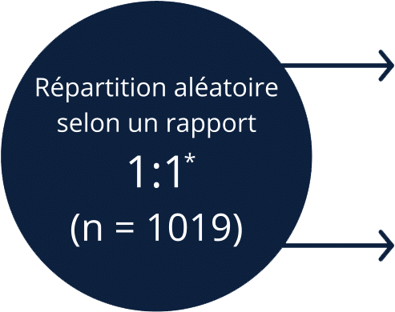

Monographie du produit
Monographie du produit Renseignements sur l’innocuité
Renseignements sur l’innocuitéKEYTRUDA® s’est révélé améliorer considérablement la survie sans récidive (SSR) comparativement au placebo chez les patients qui ont subi une résection d’un mélanome de stade III.
(135 vs 216 événements; RR* = 0,57 [IC à 98 % : 0,43-0,74]; p < 0,0001†)1
SSR à 1 an :
avec KEYTRUDA®
avec le placebo
vs

Réduction de
 43 %
43 %
* Basé sur le modèle stratifié des risques proportionnels de Cox.
† La valeur p (basée sur le test logarithmique par rangs stratifié) est comparée avec 0,008 de la valeur alpha allouée pour cette analyse provisoire.
Réduction de
43 %
du risque de récidive ou de décès
Nouvelle indication comme traitement adjuvant chez les patients atteints d’un mélanome de stade III1
Efficacité
Cette section présente la méthodologie de l’étude pivot KEYNOTE-054, qui visait à évaluer KEYTRUDA® comme traitement adjuvant des mélanomes de stade III complètement réséqués. On y énumère les caractéristiques initiales de la population à l’étude. Les données sur l’efficacité pour le paramètre principal – la SSR évaluée par les chercheurs – y sont également présentées.
Protocole de l’étude
KEYNOTE-054 est une étude multicentrique pivot à répartition aléatoire, à double insu et contrôlée par placebo qui visait à évaluer l’efficacité de KEYTRUDA® chez les patients qui ont subi une résection complète d’un mélanome de stade III1,2.
1
Critères d’inclusion
2
Groupes de l’étude
3
Paramètres principaux†
- Mélanome de stade IIIA
(métastases dans les ganglions lymphatiques > 1 mm), IIIB ou IIIC - Avoir subi une dissection complète des ganglions lymphatiques et, si besoin, une radiothérapie dans les 13 semaines précédant l’instauration du traitement

200 mg de KEYTRUDA® toutes les 3 semaines (n = 514)
PLACEBO (n = 505)
SSR évaluée par les chercheurs
(population en ITT)
+
SSR évaluée par les chercheurs
(sous-groupe exprimant le PD-L1)
Poursuite du traitement jusqu’à l’évolution de la maladie ou la survenue d’une toxicité intolérable pendant un maximum de 1 an1.
La SSR était définie comme étant l’intervalle entre la répartition aléatoire et la première récidive (métastases locales, régionales ou distantes) ou le décès, selon la première éventualité1.
Les patients qui présentaient une récidive subséquente de leur maladie plus de 6 mois après un traitement adjuvant de 1 an pouvaient être traités de nouveau avec KEYTRUDA®1.
* Stratifiée conformément à la 7e édition de la classification de l’American Joint Committee on Cancer (AJCC), au stade (IIIA vs IIIB vs IIIC avec 1 à 3 ganglions lymphatiques atteints vs IIIC ≥ 4 ganglions lymphatiques atteints) et à la région géographique (Amérique du Nord, pays européens, Australie et d’autres pays, selon le cas)1.
-
† Des examens d’imagerie ont été effectués toutes les 12 semaines pendant les deux premières années, puis tous les 6 mois de la 3e à la 5e année, puis chaque année subséquemment1.
Caractéristiques initiales
| Caractéristique | KEYTRUDA® 200 mg toutes les 3 semaines n = 514 |
Placebo n = 505 |
|---|---|---|
| Hommes | 63 % | 60 % |
| Femmes | 37 % | 40 % |
| Âge (médiane) | 54 ans | 54 ans |
| Âge (plage) | 19 à 88 ans | 19 à 83 ans |
| Âge (≥ 65 ans) | 24 % | 25 % |
| IF ECOG | ||
| 0 | 94 % | 94 % |
| 1 | 6 % | 6 % |
| Stade | ||
| IIIA (> 1 mm) | 16 % | 16 % |
| IIIB | 46 % | 46 % |
| IIIC (1 à 3 ganglions lymphatiques atteints) | 18 % | 18 % |
| IIIC (≥ 4 ganglions lymphatiques atteints) | 20 % | 20 % |
| Statut du gène BRAF | ||
| Mutation détectée | 48 % | 52 % |
| Mutation non détectée | 45 % | 42 % |
| Inconnu | 7 % | 6 % |
| Statut PD-L1* | ||
| Positif | 83 % | 84 % |
| Négatif | 11 % | 11 % |
| Inconnu | 5 % | 5 % |
| ||

Paramètre principal : survie sans récidive
KEYTRUDA® s’est révélé améliorer considérablement la survie sans récidive (SSR) comparativement au placebo (p < 0,0001) dans le traitement adjuvant des patients qui ont subi une résection d’un mélanome de stade III. La SSR médiane n’a pas été atteinte avec KEYTRUDA® comparativement à 20,4 mois dans le groupe du placebo (IC à 95 % : 16,2; n. a.)1.
51 % reduction in the risk of death1
KEYTRUDA®
Placebo
RFS (%)
Nombre de patients à risque
| KEYTRUDA®: | |||||||||
| 514 | 438 | 413 | 392 | 313 | 182 | 73 | 15 | 0 | |
| Placebo: | |||||||||
| 505 | 415 | 363 | 323 | 264 | 157 | 60 | 15 | 0 | |
D’après la monographie de KEYTRUDA®1.
| Keytruda®: | ||||||||
| Placebo: | ||||||||
| 514 | 438 | 413 | 392 | 313 | 182 | 73 | 15 | 0 |
| Placebo: | ||||||||
| 505 | 415 | 363 | 323 | 264 | 157 | 60 | 15 | 0 |
Adapted from the KEYTRUDA® Product Monograph.1

43 %
Réduction de 43 % du risque de récidive ou de décèsRR* =0,57 (IC à 98 % : 0,43-0,74); p < 0,0001†
43 %
Réduction de 43 % du risque de récidive ou de décès
RR* =0,57 (IC à 98 % : 0,43-0,74); p < 0,0001†
Réduction de 43 % du risque de récidive ou de décès
RR* =0,57 (IC à 98 % : 0,43-0,74); p < 0,0001†
Pour les patients atteints de tumeurs exprimant le PD-L11,2
Le RR pour la SSR (KEYTRUDA® vs placebo) était de 0,54 (IC à 95 % : 0,42, 0,69)
Réduction de
du risque de récidive ou de décès
Les bienfaits de KEYTRUDA® quant à la SSR, comparativement au placebo, ont été observés sans égard à l’expression de PD-L1 ou au statut relatif à la mutation du gène BRAF 1.
- * Basé sur le modèle stratifié des risques proportionnels de Cox.
† La valeur p (basée sur le test logarithmique par rangs stratifié) est comparée avec 0,008 de la valeur alpha allouée pour cette analyse provisoire.
Profil d’innocuité
Cette section présente les données sur l’innocuité de l’étude pivot KEYNOTE-054 et montre le profil d’effets indésirables de KEYTRUDA® chez les patients atteints d’un mélanome de stade III réséqué.
Effets indésirables
Dans l’ensemble généralement, KEYTRUDA® a été bien toléré chez les patients atteints d’un mélanome de stade III réséqué.
Effets indésirables liés au traitement les plus fréquents avec le traitement adjuvant par KEYTRUDA® (≥ 15 % des patients)1
| KEYTRUDA® 200 mg toutes les 3 semaines (n = 509) | Placebo (n = 502) | |||||
|---|---|---|---|---|---|---|
| Effet indésirable | Tous les grades | Grade 3 | Grade 4 | Tous les grades | Grade 3 | Grade 4 |
| Diarrhée | 18,5 % | 0,6 % | 0,2 % | 16,3 % | 0,6 % | - |
| Fatigue | 28,1 % | 0,8 % | - | 26,9 % | 0,4 % | - |
| Prurit | 16,7 % | - | - | 9,8 % | - | - |
D’après la monographie de KEYTRUDA®1.
Les effets indésirables étaient généralement comparables à ceux des patients atteints d’un mélanome non résécable ou métastatique, ou d’un cancer du poumon non à petites cellules1.
Posologie
Cette section porte sur la dose recommandée et l’administration de KEYTRUDA® pour le traitement adjuvant des mélanomes.
Dose recommandée

Dose fixe à 200 mg administrée par perfusion i.v.

Sur 30 minutes

Toutes les 3 semaines
Traitement jusqu’à 1 an ou jusqu’à constatation d’une récidive de la maladie ou d’une toxicité intolérable1.
Pour obtenir de plus amples renseignements sur la posologie et les modifications posologiques, veuillez consulter la monographie du produit.
Services du programme
Les services peuvent comprendre, selon l’admissibilité des patients :
- Remboursement
- Aide à titre humanitaire
- Aide financière
- Soutien infirmier
Ces services seront présentés au patient pendant la première consultation de l’infirmière ou de l’infirmier du Programme.
Le programme Merck Santé™ – Oncologie a comme objectif de s’assurer que les patients obtiennent le soutien dont ils ont besoin pendant le traitement avec KEYTRUDA®. Consulter les conditions établies dans le formulaire d’inscription.

 Heures de service :
Heures de service :
Du lundi au vendredi, de 8 h à 20 h (HNE) Pour communiquer avec nous : 1-855-549-9416
Pour communiquer avec nous : 1-855-549-9416 Courriel : keytruda@bayshore.ca
Courriel : keytruda@bayshore.ca Téléc. : 1-855-549-9415
Téléc. : 1-855-549-9415- Télécharger maintenant
Formulaire d’inscription au programme Merck SantéTM – Oncologie
Remplissez le formulaire afin d’inscrire des patients qui reçoivent KEYTRUDA® au programme Merck SantéTM – Oncologie :

™Merck Canada Inc.
En savoir plus sur KEYTRUDA®
Visitez Merck ConnectIC = intervalle de confiance; IF ECOG = indice fonctionnel de l’Eastern Cooperative Oncology Group; RR = rapport de risque; PD-L1 = ligand 1 de la mort cellulaire programmée.
- Références :
- 1. Monographie de KEYTRUDA®. Merck Canada Inc., 4 juillet 2019.
- 2. Eggermont AMM, Blank CU, Mandala M, et al. Adjuvant Pembrolizumab versus Placebo in Resected Stage III Melanoma. N Eng J Med, 2018;378:1789-1801.
- ® Merck Sharp & Dohme Corp., utilisée sous licence.
- © 2019 Merck Canada Inc. Tous droits réservés.
- Merck Canada Inc.
- 16750, autoroute Transcanadienne
- Kirkland (Québec) Canada H9H 4M7
CA-KEY-00029